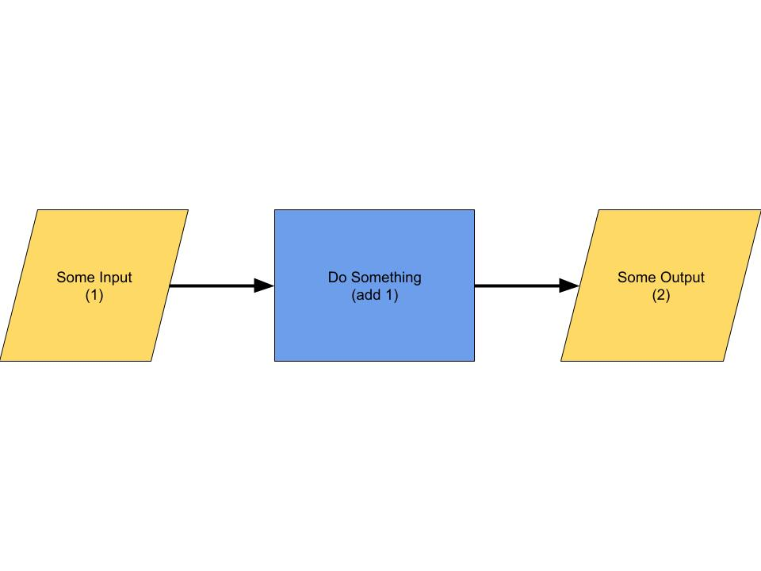
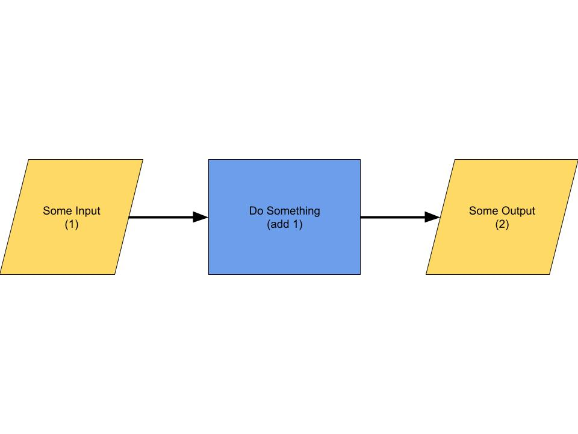

Social Algorithms
 

What is an Algorithm?
Any logical process is an algorithm, but these simple algorithms are not the kind that shape society. The algorithms that are important to this conversation are from a very complicated family algorithms called Machine Learning or Deep Learning Algorithms. Machine and Deep learning algorithms are algorithms that use conclusions drawn from large data sets to make predictions or automate tasks.
Why are they important?
Throughout history technology has driven humans towards an easier, more convenient lifestyle. In the modern developed world, with our needs sufficiently met we have turned toward optimizing societal interactions and decisions. Though they are powerful tools, learning algorithms are neither infallible nor blind to bias. Driven by desire for profit and images of a simpler future, we recklessly ignore the sacrifices and consequences that come with building a society around predictive algorithms.
To be most effective an algorithm must collect enormous amounts of data from many sources. Collecting all this data requires people to sacrifice their privacy. This data also must be carefully selected to avoid the introduction of bias. A system trained on biased data will produce biased results. For example, due to a history of racial bias a system designed to predict recidivism will likely give a worse rating to a person of color than a white person. This automation of bias negatively impacts society, especially when these systems are painted as impartial.